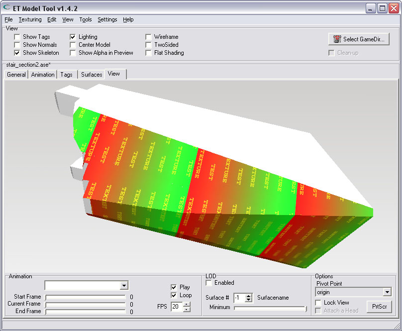

| Converting .ASE To .MD3 | |
| You can convert the 3D-Studio .ASE-files to MD3. ASE stands for ASCII Scene Export, and it is a really old file-format. I wasn't aware of it, but ASE seems to support animation. However, this version of the tool does not yet support animated ASE-models. To import an ASE, select the choice from the menu: "Load ASE From File..." | |
| Then select the file You want to read, and convert into MD3. | |
| The model is converted into MD3 | |
| Here is the model after it has been read, and converted: | |
| Texturing | |
| As You can see, this example model is not textured yet. It has some shadernames assigned, but none of the textures could be located by this tool. Allthough the current shadernames imply the model is used in some kind of Quake-game, they are no ET shaders or textures. This is often the case, because ASE-models are not native to ET, and textures can come from many locations. Here You see that i have selected a surface on the 'Surfaces'-Tab. It is my intention to change the shadername so it points to a new, custom texture. | |
| Changing the shadername for a surface | |
| Type in the name of the shader. This can also be the name of a texture. You must also include the relative path of where the model later will be inside Your PK3. My example model will be placed in a folder called 'models/ase', and my texture is called 'testtexture.jpg'. | |
| If You want to see the model textured with Your own custom textures, You need to put the textures in the same folder as where You load the model from. So, model.ase & any custom textures must be in the same folder. | |
| Be sure to press the ENTER-key after You typed-in the new name of the shader. | |
| Pressing ENTER to confirm changes | |
| After pressing the ENTER-key, the new texture will be loaded immediately. The texture-preview will show the found texture. | |
| Viewing the model | |
| After changing the shadername of a surface, the new texture is mapped onto the surface in the 3D-View. | |
|  | |
| Thanks | |
| Thanks to Ken 'kat' Beyer who has created the ASE. http://www.katsbits.com The original model looks, of course, more beautiful with the intended textures. You can see an image of how it is supposed to look: The textured model | |